Phone sweep — fixed: 1 Reports, 2 Leaderboard, 3 backup lights, 4 map menu
The real app at a 390 phone screen, before and after. On the PC nothing moved, and the printed PDF is the same.
1 · Reports — sales analytics
TODAY
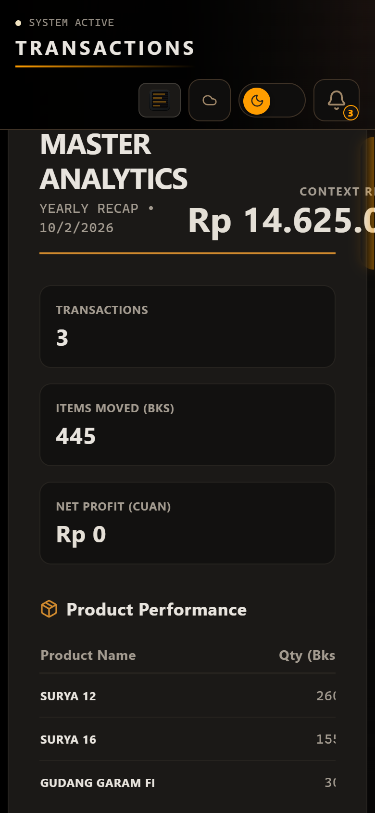
AFTER
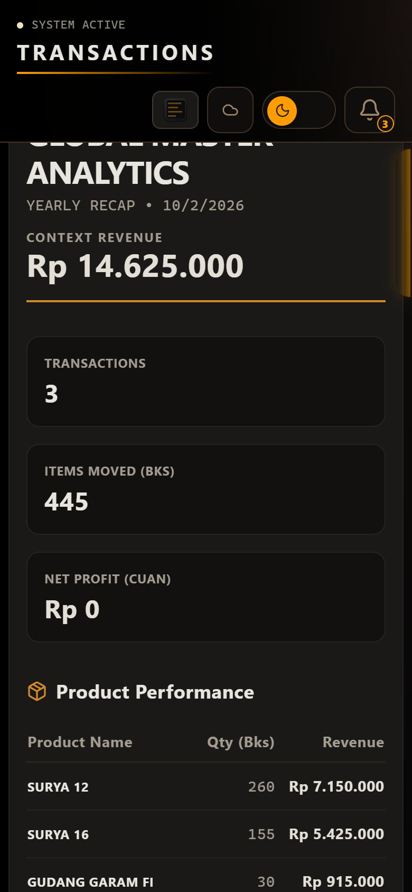
The total money and the Revenue column are on the screen. No sideways swipe.
1 · Reports — one shop's sales
TODAY
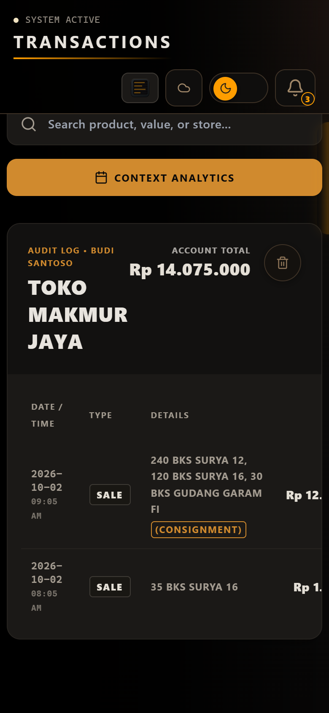
AFTER
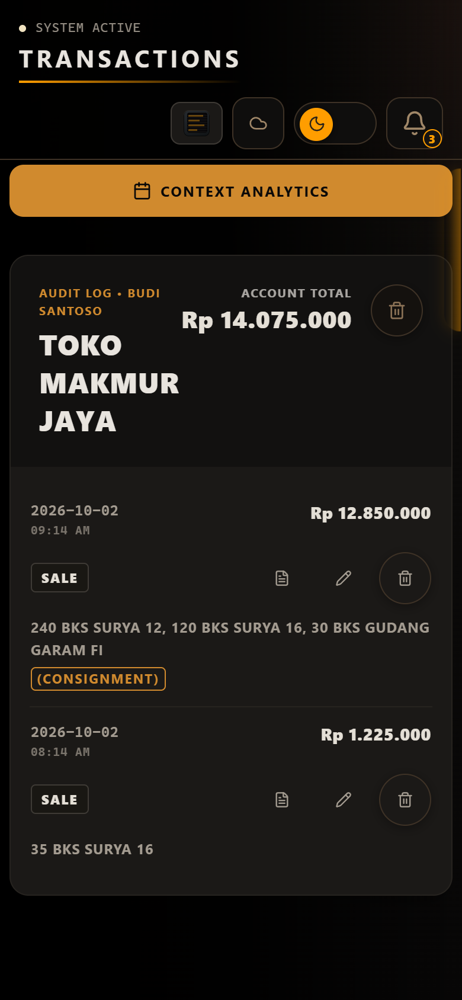
Each sale is a card: date and money on top, then the buttons, then the goods.
1 · Reports — time buttons
TODAY
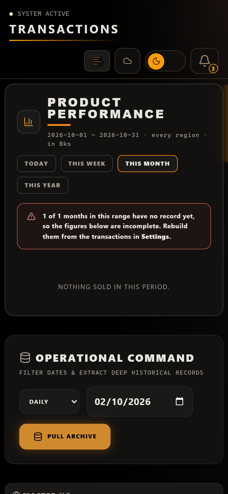
AFTER
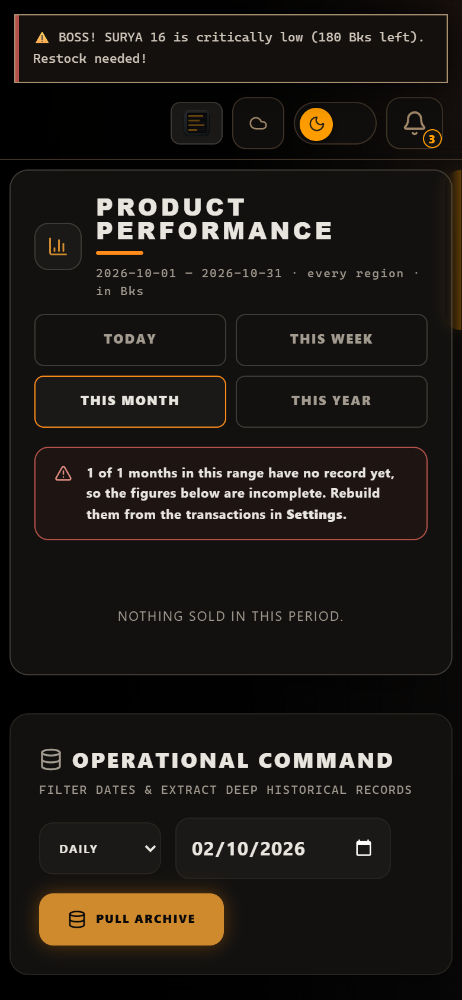
Two by two, each one finger-sized (44 px). "This year" is not alone any more.
2 · Leaderboard
TODAY
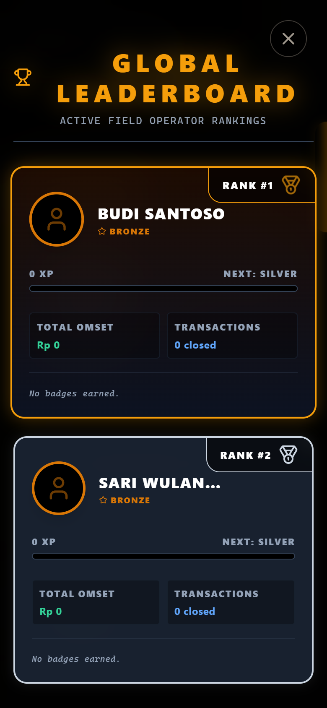
AFTER
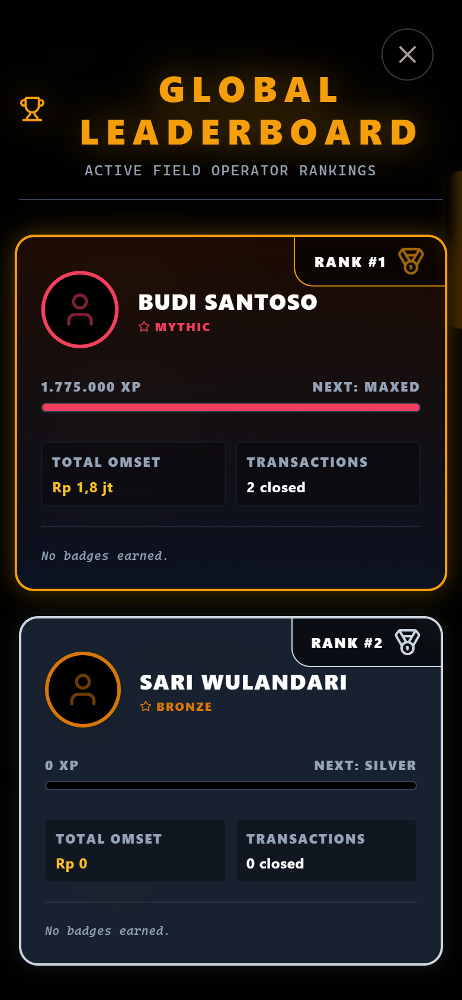
Full names (SARI WULANDARI). Money is gold, sales are white — no green, no blue.
3 · Command Center — backup lights
TODAY
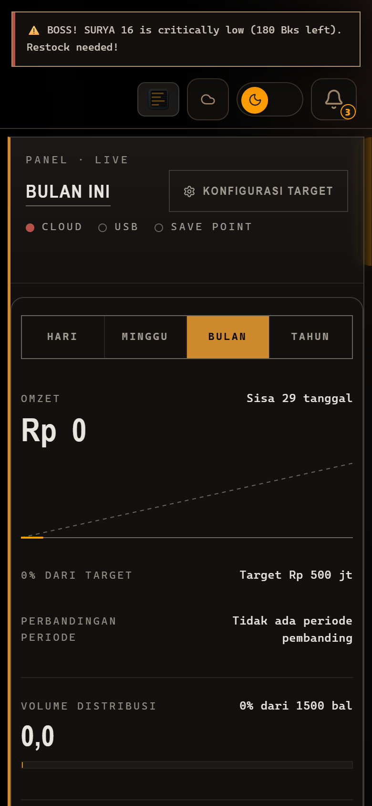
AFTER
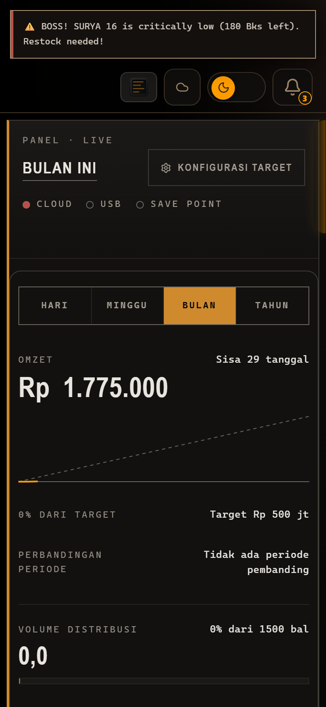
Same look. Each light is now 44 px tall to tap, so the finger hits the right one.
4 · Map — the ≡ menu
TODAY

AFTER
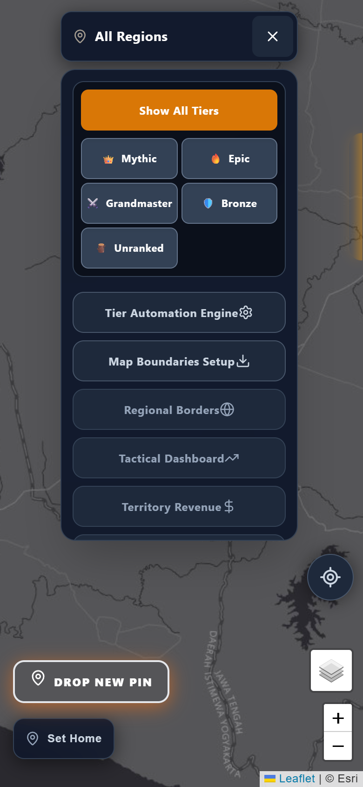
"Show All Tiers" is gold, not blue. The tier buttons are 44 px tall.
Some TODAY frames show fewer sales: three test sales dated today were added halfway, so the Reports pages could be checked full of rows.